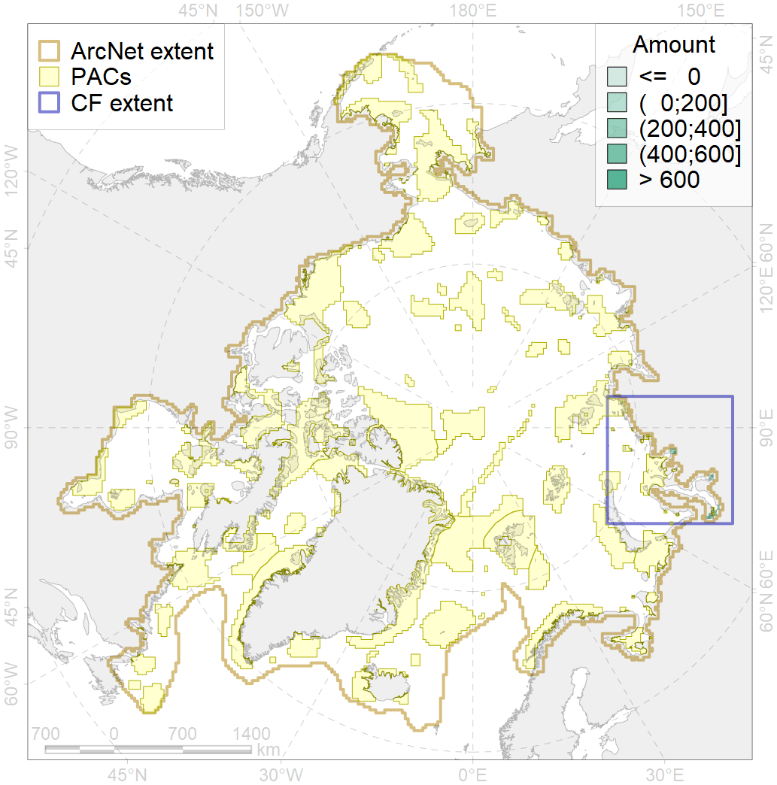
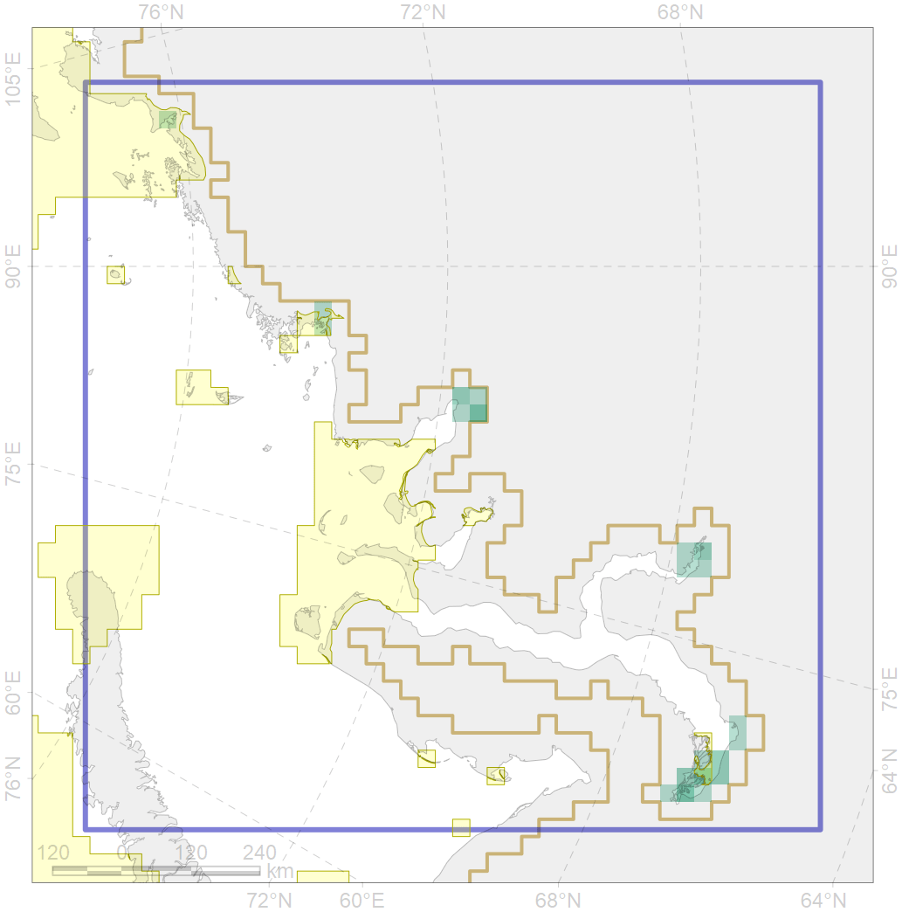

8021

| CF ID | 8021 |
| CF Name | Kara Sea estuaries |
| Time Period | 1900s - 1990s |
| Source(s) | http://data.unep-wcmc.org/datasets/28 |
| Seasonality | January - December |
| Depth Horizon | 0-10 |
| Methodology | published maps, field surveyes |
| Author Name | B. Solovyev |
| Notes | estuaries with discharge less than 1000 |
| Conservation Target Set in the Scenario | 0.28 |
| Conservation Target Achieved in the Scenario | 0.287 (Scenario: 102.5%) |
| PAC ID | Proportion in the PAC | Contribution to ArcNet Target Achievement | PAC’s Contribution to the Achieved Target |
|---|---|---|---|
| 14 | 3.7% | 13.1% | 11.6% |
| 15 | 5.2% | 18.3% | 16.2% |
| 17 | 18.1% | 55.0% | 48.7% |
| inner | 27.0% | 86.4% | 76.6% |
| outer | 59.1% | 16.1% | 14.3% |